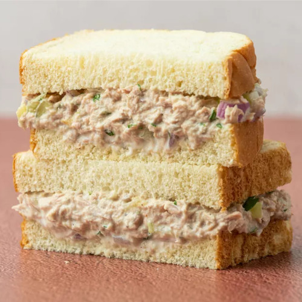

Tuna Sandwich Recipe

About Tuna Sandwich
What can I say about Tuna Sandwich? I do this when I don't feel like cooking or I want to do something quick and relatively healthy to keep working. Also, my kid loves it. It's not that hard to make, but you can try the same method I use when making these sandwiches.
Ingredients:
- Two cans of tuna
- A can of assorted veggies
- A tablespoon of mayonnaise
- A tablespoon of cream
- Sliced bread
Instructions:
- Mix the tuna, the veggies, the mayo and the cream into a bowl.
- Put the tuna mix between two slices of bread. And it's done!
Additional notes:
- Quick and easy. Noting more to add.
Go back to see more recipes.